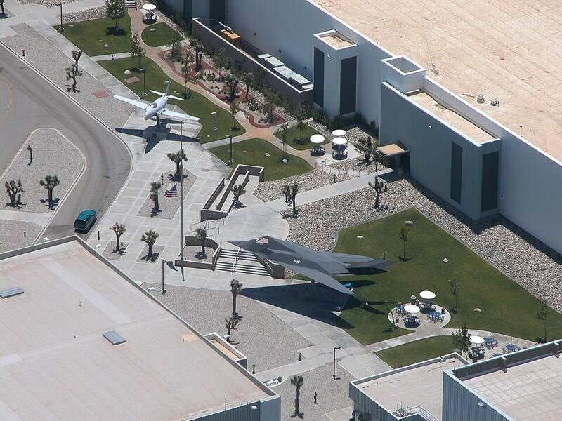

Lockheed Martin Skunk Works
Palmdale, California (Burbank until about 1989)

Lockheed Martin's Advanced Development Programs, begun in 1943, which built the U-2 and SR-71 spy planes and the F-117 stealth fighter. Its secret work has made it a favorite subject of claims about hidden advanced technology. 1
Open in the interactive Watcher
Related
- A Skunk Works chief admitted the U.S. can already travel to the stars Claim
- Ben Rich Person
- Charles Chase Person
Sources
- Skunk Works Wikipedia